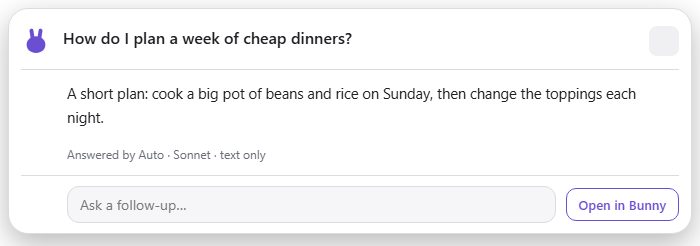
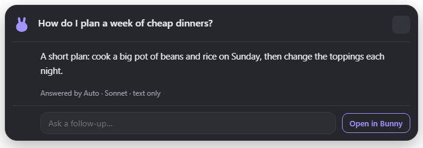

<title>Quick ask bar, improved</title>
<meta name="claude:viewport-fit-sides" content="cover">
<style>
/* Layout: version 2. Summary, numbered recommendations, a live try-it bar, the buttons figure, translucency, then each state (today above, proposed below), keys, notes. Bunny's colours; the pill is Bunny's take on a light, airy floating bar. */
:root{--bg:#faf9f6;--panel:#fff;--soft:#f3f1ec;--line:#e4e1da;--fg:#1c1d20;--mute:#62656c;--accent:#5b4bd5;--accent-soft:#eceafb;--ok:#1f7a4a;--ok-soft:#e3f3ea;--warn:#a5600b;--warn-soft:#fbefd9;--bad:#c4304a;--bad-soft:#fbe5e9;--wall:linear-gradient(135deg,#a8c3e6 0%,#e7c8d8 55%,#f3dbb8 100%);--mono:ui-monospace,Consolas,monospace}
@media (prefers-color-scheme:dark){:root:not([data-theme="light"]){--bg:#141518;--panel:#1d1e22;--soft:#26272c;--line:#34353b;--fg:#ececee;--mute:#9a9ca4;--accent:#a99cff;--accent-soft:#2a2750;--ok:#6fd49a;--ok-soft:#18301f;--warn:#f0b35a;--warn-soft:#3a2c12;--bad:#ff7a90;--bad-soft:#3d1a22;--wall:linear-gradient(135deg,#24304a 0%,#3b2f4a 55%,#4a3a3c 100%);color-scheme:dark}}
:root[data-theme="dark"]{--bg:#141518;--panel:#1d1e22;--soft:#26272c;--line:#34353b;--fg:#ececee;--mute:#9a9ca4;--accent:#a99cff;--accent-soft:#2a2750;--ok:#6fd49a;--ok-soft:#18301f;--warn:#f0b35a;--warn-soft:#3a2c12;--bad:#ff7a90;--bad-soft:#3d1a22;--wall:linear-gradient(135deg,#24304a 0%,#3b2f4a 55%,#4a3a3c 100%);color-scheme:dark}
*{box-sizing:border-box}
body{background:var(--bg);color:var(--fg);font:15px/1.5 "Segoe UI",system-ui,sans-serif;padding-block:28px 56px;padding-left:max(16px,env(safe-area-inset-left,0px));padding-right:max(16px,env(safe-area-inset-right,0px))}
main{max-width:1000px;margin:0 auto;display:grid;gap:26px}
h1{font-size:26px;margin:0 0 4px;text-wrap:balance}h2{font-size:18px;margin:0 0 8px}h3{font-size:15px;margin:0}p{margin:0}
.mute{color:var(--mute)}
.top{display:flex;gap:12px;justify-content:space-between;align-items:flex-start;flex-wrap:wrap}
button.t{font:inherit;color:var(--fg);background:var(--soft);border:1px solid var(--line);border-radius:10px;padding:7px 12px;cursor:pointer}
.card{background:var(--panel);border:1px solid var(--line);border-radius:12px;padding:16px;display:grid;gap:10px;min-width:0}
.rec{display:grid;grid-template-columns:34px 1fr;gap:4px 12px;padding:10px 0;border-top:1px solid var(--line)}
.rec.first{border-top:0}
.rec .n{width:28px;height:28px;border-radius:50%;background:var(--accent-soft);color:var(--accent);display:grid;place-items:center;font-weight:700;font-size:13px}
.rec b{display:block}.rec .m{font-size:12.5px;color:var(--mute)}
.pill{display:inline-block;font-size:11px;letter-spacing:.05em;text-transform:uppercase;border-radius:999px;padding:1px 8px;margin-right:6px}
.p-bug{background:var(--bad-soft);color:var(--bad)}.p-low{background:var(--ok-soft);color:var(--ok)}.p-med{background:var(--warn-soft);color:var(--warn)}.p-new{background:var(--accent-soft);color:var(--accent)}
.state{display:grid;gap:10px;min-width:0}
.state>header{display:flex;gap:8px 12px;align-items:baseline;flex-wrap:wrap}
.state>header .refs{font-size:12.5px;color:var(--mute)}
.pair,.both{display:grid;gap:12px}.both{grid-template-columns:1fr 1fr}
.both>*,.pair>*,.state>*{min-width:0}
.lab{font-size:11px;letter-spacing:.07em;text-transform:uppercase;color:var(--mute);margin-bottom:4px;display:flex;justify-content:space-between;gap:8px}
.stagebox{background:var(--wall);border-radius:12px;padding:10px;overflow:hidden;min-width:0}
.stagebox.dk{background:linear-gradient(135deg,#24304a 0%,#3b2f4a 55%,#4a3a3c 100%)}
.stagebox.lt{background:linear-gradient(135deg,#a8c3e6 0%,#e7c8d8 55%,#f3dbb8 100%)}
.sb{width:708px;transform-origin:0 0}
.win{width:708px;border:1px dashed rgba(255,255,255,.6);position:relative}
.win>.wl{position:absolute;right:6px;bottom:3px;font:11px var(--mono);color:rgba(255,255,255,.85)}
.sb img.imgl{display:block}.sb img.imgd{display:none}
:root[data-theme="dark"] .sb img.imgl{display:none}:root[data-theme="dark"] .sb img.imgd{display:block}
@media (prefers-color-scheme:dark){:root:not([data-theme="light"]) .sb img.imgl{display:none}:root:not([data-theme="light"]) .sb img.imgd{display:block}}
.sb img{width:700px;height:auto}
.tbl{overflow-x:auto;border:1px solid var(--line);border-radius:12px;background:var(--panel)}
table{border-collapse:collapse;width:100%;min-width:640px;font-size:13.5px}
th,td{text-align:left;padding:8px 12px;border-top:1px solid var(--line);vertical-align:top}
thead th{border-top:0;background:var(--soft);font-size:12px;letter-spacing:.05em;text-transform:uppercase;color:var(--mute)}
kbd,code{font-family:var(--mono);font-size:12.5px;background:var(--soft);border:1px solid var(--line);border-radius:5px;padding:0 5px}
.note{border:1px solid var(--warn);background:var(--warn-soft);border-radius:10px;padding:10px 14px;font-size:14px}
@media (max-width:760px){.both{grid-template-columns:1fr}}

/* ---------- Proposed bar: Bunny's light, airy pill ---------- */
.bw{--surface:rgba(255,255,255,.92);--solid:#ffffff;--text:#1f2024;--dim:#6b6e78;--line:rgba(31,32,36,.10);--accent:#6b4fd3;--ink:#1f2024;--ink-hi:#34363c;--on-ink:#ffffff;--soft:rgba(31,32,36,.05);--hover:rgba(31,32,36,.08);--warn:#b45309;--bad:#cf3f55;--warn-bg:rgba(180,83,9,.09);--bad-bg:rgba(207,63,85,.09);font:15px/1.5 system-ui,"Segoe UI",sans-serif;color:var(--text)}
:root[data-theme="dark"] .bw{--surface:rgba(38,39,44,.92);--solid:#26272c;--text:#ececf0;--dim:#a3a6b1;--line:rgba(255,255,255,.11);--accent:#a592ff;--ink:#ececf0;--ink-hi:#ffffff;--on-ink:#1f2024;--soft:rgba(255,255,255,.06);--hover:rgba(255,255,255,.09);--warn:#e9ad52;--bad:#ff7a90;--warn-bg:rgba(233,173,82,.12);--bad-bg:rgba(255,122,144,.12)}
@media (prefers-color-scheme:dark){:root:not([data-theme="light"]) .bw{--surface:rgba(38,39,44,.92);--solid:#26272c;--text:#ececf0;--dim:#a3a6b1;--line:rgba(255,255,255,.11);--accent:#a592ff;--ink:#ececf0;--ink-hi:#ffffff;--on-ink:#1f2024;--soft:rgba(255,255,255,.06);--hover:rgba(255,255,255,.09);--warn:#e9ad52;--bad:#ff7a90;--warn-bg:rgba(233,173,82,.12);--bad-bg:rgba(255,122,144,.12)}}
html:root .bw.forcedark{--surface:rgba(38,39,44,.92);--solid:#26272c;--text:#ececf0;--dim:#a3a6b1;--line:rgba(255,255,255,.11);--accent:#a592ff;--ink:#ececf0;--ink-hi:#ffffff;--on-ink:#1f2024;--soft:rgba(255,255,255,.06);--hover:rgba(255,255,255,.09);--warn:#e9ad52;--bad:#ff7a90;--warn-bg:rgba(233,173,82,.12);--bad-bg:rgba(255,122,144,.12)}
html:root .bw.forcelight{--surface:rgba(255,255,255,.92);--solid:#ffffff;--text:#1f2024;--dim:#6b6e78;--line:rgba(31,32,36,.10);--accent:#6b4fd3;--ink:#1f2024;--ink-hi:#34363c;--on-ink:#ffffff;--soft:rgba(31,32,36,.05);--hover:rgba(31,32,36,.08);--warn:#b45309;--bad:#cf3f55;--warn-bg:rgba(180,83,9,.09);--bad-bg:rgba(207,63,85,.09)}
.bw *{box-sizing:border-box}
.pl{position:relative;margin:8px;width:624px;background:var(--surface);border:1px solid var(--line);border-radius:20px;box-shadow:0 14px 44px rgba(20,22,40,.20),0 2px 6px rgba(20,22,40,.08)}
.pr{display:flex;align-items:center;gap:12px;min-height:52px;padding:0 10px 0 16px}
.pr.top1{align-items:flex-start;padding-top:10px;min-height:0}
.mk{width:24px;height:24px;color:var(--accent);flex:none}
.pr.top1 .mk{margin-top:6px}
.tx{flex:1;min-width:0;font-size:17px;line-height:1.4;color:var(--text);padding:7px 0;overflow:hidden;white-space:nowrap;text-overflow:ellipsis}
.tx.ph{color:var(--dim)}
.cr{display:inline-block;width:2px;height:20px;background:var(--accent);vertical-align:-4px;margin-left:1px;border-radius:1px}
.q2{flex:1;min-width:0;font-size:15.5px;font-weight:600;line-height:1.4;padding:7px 0;overflow-wrap:anywhere}
.ib2{width:32px;height:32px;border-radius:50%;display:grid;place-items:center;flex:none;color:var(--dim);background:transparent;border:0;transition:background .16s,color .16s,transform .12s,opacity .16s}
.ib2:hover,.ib2.hv{background:var(--hover);color:var(--text)}
.ib2.fc,.act.fc{outline:2px solid var(--accent);outline-offset:2px}
.act{width:34px;height:34px;border-radius:50%;display:grid;place-items:center;flex:none;background:var(--ink);color:var(--on-ink);border:0;transition:background .16s,transform .12s,opacity .16s}
.act.hv{background:var(--ink-hi)}
.act.pr2{transform:scale(.94)}
.act.dis{background:var(--soft);color:var(--dim);opacity:.8}
.ib2.pr2{transform:scale(.94)}
.keys{font-size:12px;color:var(--dim);padding:0 16px 10px 52px;display:flex;gap:14px;flex-wrap:wrap}
.keys .push{margin-left:auto}
.body{padding:0 20px 2px 52px}
.ansb{font-size:15px;line-height:1.65;max-height:330px;overflow:hidden;position:relative;padding-top:2px}
.ansb p{margin:0 0 9px}.ansb code{font:12.5px ui-monospace,Consolas,monospace;background:var(--soft);border-radius:5px;padding:0 5px}
.ansb pre{margin:0 0 9px;background:var(--soft);border-radius:12px;padding:10px 14px;font:12.5px/1.6 ui-monospace,Consolas,monospace;overflow:hidden;position:relative;white-space:pre}
.ansb pre code{background:transparent;padding:0}
.cpy{position:absolute;top:6px;right:8px;font:12px "Segoe UI",system-ui,sans-serif;color:var(--dim);background:var(--solid);border:1px solid var(--line);border-radius:8px;padding:1px 9px}
.latest{position:absolute;left:50%;bottom:8px;transform:translateX(-50%);background:var(--ink);color:var(--on-ink);border-radius:999px;font-size:12px;padding:3px 12px;box-shadow:0 2px 8px rgba(0,0,0,.25)}
.fade{position:absolute;left:0;right:0;bottom:0;height:46px;background:linear-gradient(transparent,var(--solid))}
.think{display:flex;align-items:center;gap:10px;font-size:14px;color:var(--dim);padding:2px 0 8px}
.dots{display:inline-flex;gap:4px}.dots i{width:6px;height:6px;border-radius:50%;background:var(--accent);opacity:.35}.dots i:nth-child(2){opacity:.65}.dots i:nth-child(3){opacity:1}
.meta2{font-size:12px;color:var(--dim);padding:2px 0 8px}
.fr{display:flex;align-items:center;gap:10px;padding:6px 12px 12px 52px}
.fin2{flex:1;min-width:0;height:40px;border-radius:14px;background:var(--soft);color:var(--dim);font-size:14px;display:flex;align-items:center;padding:0 14px}
.ob2{display:inline-flex;align-items:center;gap:8px;height:36px;border-radius:12px;padding:0 14px;font-size:13px;font-weight:600;white-space:nowrap;color:var(--accent);background:transparent;border:1px solid color-mix(in srgb,var(--accent) 45%,transparent)}
.ob2.fill{background:var(--accent);color:var(--solid);border-color:var(--accent)}
.ob2 .kb{font:11px var(--mono);opacity:.8}
.earlier{display:flex;gap:8px;align-items:center;padding:0 20px 6px 52px;font-size:12.5px;color:var(--dim)}
.card2{margin:6px 20px 8px 52px;border-radius:14px;padding:12px 14px;display:grid;gap:8px}
.card2.warn{background:var(--warn-bg)}.card2.bad{background:var(--bad-bg)}
.card2 .t{font-weight:600}.card2.warn .t{color:var(--warn)}.card2.bad .t{color:var(--bad)}
.card2 .b{font-size:13.5px}.card2 .acts{display:flex;gap:8px;flex-wrap:wrap}
.gh2{display:inline-flex;align-items:center;height:36px;border-radius:12px;padding:0 14px;font-size:13px;background:var(--soft)}
.menu2{position:absolute;left:44px;top:56px;background:var(--solid);border:1px solid var(--line);border-radius:14px;box-shadow:0 12px 32px rgba(20,22,40,.22);padding:6px;min-width:250px;z-index:2}
.menu2 div{font-size:14px;padding:7px 10px;border-radius:9px}.menu2 div.f{background:var(--hover)}.menu2 small{display:block;color:var(--dim);font-size:12px}
.chiprow{display:flex;gap:8px;padding:0 16px 10px 52px}
.chip2{display:inline-flex;align-items:center;gap:8px;border-radius:999px;padding:3px 8px 3px 4px;font-size:13px;background:var(--soft)}
.chip2 i{width:34px;height:22px;border-radius:6px;background:var(--line);display:block}.chip2 u{text-decoration:none;color:var(--dim);font-size:16px}
.copied{font-size:12px;color:var(--dim);margin-right:2px;align-self:center}
/* try-it: real transitions */
.demo .reveal{opacity:0;transform:scale(.85);width:0;margin-left:-12px;overflow:hidden;pointer-events:none;transition:opacity .16s ease-out,transform .16s ease-out,width .16s ease-out,margin .16s ease-out}
.demo .reveal.on{opacity:1;transform:none;width:34px;margin-left:0;pointer-events:auto}
.demo .collapse{display:grid;grid-template-rows:0fr;transition:grid-template-rows .22s ease-out}
.demo .collapse.on{grid-template-rows:1fr}
.demo .collapse>div{overflow:hidden;min-height:0}
.demo input{flex:1;min-width:0;font:17px system-ui,"Segoe UI",sans-serif;color:var(--text);background:transparent;border:0;outline:0;padding:7px 0}
.demo input::placeholder{color:var(--dim)}
.demo button{font:inherit;cursor:pointer}
@media (prefers-reduced-motion:reduce){.demo .reveal,.demo .collapse,.ib2,.act{transition:none}}
/* buttons figure */
.bigrow{display:flex;gap:18px 26px;flex-wrap:wrap;align-items:flex-end}
.bcell{display:grid;gap:6px;justify-items:center;font-size:12px;color:var(--mute)}
.bbox{padding:14px;border-radius:14px;display:flex;gap:12px;align-items:center}
.bbox .z{zoom:2.2;display:flex;gap:8px;align-items:center}
.bbox.lt{background:#fff;border:1px solid #dcdce0}.bbox.dk{background:#26272c;border:1px solid #3a3c44}
.oldcirc{width:34px;height:34px;border-radius:50%;background:#1f2024;display:block}
.oldsq{width:30px;height:30px;border-radius:8px;background:#f0f0f3;display:block}
.dk .oldcirc{background:#ececf0}.dk .oldsq{background:#33353c}
.opts{display:grid;grid-template-columns:1fr 1fr;gap:12px}
.opts>*{min-width:0}
@media (max-width:760px){.opts{grid-template-columns:1fr}}
.wallfig{border-radius:12px;padding:20px 14px;background:var(--wall);position:relative;overflow:hidden;min-height:150px}
.wallfig .blob{position:absolute;border-radius:50%}
.wallfig .blob.a{width:120px;height:120px;background:#e0527a;left:10%;top:-30px;opacity:.9}
.wallfig .blob.b{width:90px;height:90px;background:#2f7de1;right:8%;bottom:-20px;opacity:.9}
.wallfig .mini{position:relative;margin:34px auto 0;max-width:330px;height:46px;display:flex;align-items:center;gap:10px;padding:0 14px;font-size:14px;color:#1f2024}
.wallfig .mini.A{background:rgba(255,255,255,.92);border:1px solid rgba(31,32,36,.10);border-radius:20px;box-shadow:0 14px 34px rgba(20,22,40,.25)}
.wallfig .mini.B{background:rgba(255,255,255,.55);border:1px solid rgba(255,255,255,.7);border-radius:8px;backdrop-filter:blur(18px) saturate(1.4);-webkit-backdrop-filter:blur(18px) saturate(1.4)}
.wallfig.dkw .mini.A{background:rgba(38,39,44,.92);border-color:rgba(255,255,255,.11);color:#ececf0}.wallfig.dkw .mini.B{background:rgba(38,39,44,.55);border-color:rgba(255,255,255,.18);color:#ececf0}
.wcap{position:absolute;left:12px;top:8px;font:12px var(--mono);color:#fff;text-shadow:0 1px 2px rgba(0,0,0,.45)}
</style>

<main>
<div class="top">
  <div>
    <h1>Quick ask bar, improved</h1>
    <p class="mute">Version 2: the light, airy floating pill the owner asked for, in Bunny's own mark and colours, with the ten fixes inside it. Invented data only.</p>
  </div>
  <button class="t" id="theme" type="button">Show the other theme</button>
</div>

<section class="card">
  <h2>What I found running today's bar</h2>
  <p class="mute">I ran the bar's own page (<code>electron/quick-ask/bar.html</code>, build bf9f320) at its real size with a stand-in for the bridge, on an invented profile, and took the pictures marked "Today". I did not run it inside Electron, so the window's own behaviour (click-away, Esc, placement) is read from the code.</p>
  <ul style="margin:0;padding-left:20px;display:grid;gap:4px">
    <li><b>The Stop and Copy buttons are blank.</b> Their icons are SVG text with no namespace, so they measure 0 × 0. While thinking you see the empty dark circle from the owner's picture; after the answer, an empty square.</li>
    <li><b>The window is 700 × 300 even when the bar is 99 px tall:</b> about 200 px of invisible window takes clicks meant for the app behind it.</li>
    <li><b>No keys are shown after the first question,</b> and Esc closes everything at once, even with the + menu open.</li>
    <li><b>A long answer jumps to its end while it streams</b> (measured: scrolled 199 px of 528).</li>
    <li><b>A follow-up replaces the earlier answer</b> on screen, though it is one chat.</li>
    <li>The bar takes its colours from Windows, not Bunny's Theme, and its font from the system, not Appearance.</li>
  </ul>
</section>

<section class="card">
  <h2>Recommendations</h2>
  <div class="rec first"><span class="n">1</span><div><b><span class="pill p-bug">bug</span>Draw the Stop and Copy icons properly, and remove the double indent on the thinking line</b><span class="m">Add the SVG namespace to the icon strings; new Stop and Send buttons as in the Buttons figure. bar.js:97-100, 119-127; thinking line bar.js:142-144. Risk: low.</span></div></div>
  <div class="rec"><span class="n">2</span><div><b><span class="pill p-low">low</span>The window is only as tall as the pill, and 640 wide</b><span class="m">Empty bar about 640 × 70 instead of 700 × 300. Grows for the + menu, an attachment, an answer. quick-ask.js:19,37,59,67-68,219; bar.js:25-29 and 60-64 must call fit(). Risk: low to medium (resize while typing and while the menu opens; the "menu fits" e2e test must still pass).</span></div></div>
  <div class="rec"><span class="n">3</span><div><b><span class="pill p-med">medium</span>Esc does one thing at a time</b><span class="m">Menu open: closes the menu. Answer coming: stops it and keeps what arrived. Otherwise closes the bar. Today the main process closes the bar on any Esc (quick-ask.js:88-90), so the page must decide: one new message each way, same sender check. Risk: medium (Security should look at it).</span></div></div>
  <div class="rec"><span class="n">4</span><div><b><span class="pill p-low">low</span>Keys shown from the first keystroke, and Ctrl+Enter opens the chat in Bunny</b><span class="m">The empty pill shows none (the owner's reference is clean); the keys appear as a quiet line once you type and stay through thinking and the answer. Today the hint row disappears after the first question (bar.js:136). Risk: low.</span></div></div>
  <div class="rec"><span class="n">5</span><div><b><span class="pill p-low">low</span>Copy says "Copied", and code blocks get their own Copy</b><span class="m">bar.js:238 copies silently; code blocks have none (the renderer's buttons are removed at bar.js:111 and hidden in bar.html .code-bar). Risk: low.</span></div></div>
  <div class="rec"><span class="n">6</span><div><b><span class="pill p-low">low</span>A long answer can be read while it streams</b><span class="m">Follow the end only until the reader scrolls up, then show "↓ Latest". bar.js:115. Risk: low.</span></div></div>
  <div class="rec"><span class="n">7</span><div><b><span class="pill p-med">medium</span>Earlier turns stay, folded; a long question is cut to three lines</b><span class="m">bar.js:129-148, 194-198 clear the answer on every ask; <code>.q</code> in bar.html has no limit. Risk: low to medium (page only; the height must be re-fitted).</span></div></div>
  <div class="rec"><span class="n">8</span><div><b><span class="pill p-low">low</span>Say which model will answer, as text</b><span class="m">"Answers with Auto · text only", shown with the keys once you type. No picker (switching a model stays in Bunny's window). Read once from the server when the bar opens; if that fails, show nothing. quick-ask.js open(). Risk: low.</span></div></div>
  <div class="rec"><span class="n">9</span><div><b><span class="pill p-med">medium</span>The bar follows Bunny's Theme and Interface font</b><span class="m">Main passes a theme name and a font key from the fixed list when the bar opens. Needs <code>font-src 'self'</code> in the bar's CSP and the bundled font files, so it depends on the fonts page; it can ship theme-only. bar.html:5,8-9; quick-ask.js open(). Risk: medium (CSP change: Security).</span></div></div>
  <div class="rec"><span class="n">10</span><div><b><span class="pill p-low">low</span>"No model connected" leads with "Open Bunny settings"</b><span class="m">Replaces Try again, which cannot work until a provider exists. bar.js:150-165, 188; quick-ask.js:204-212 (open with a target). Risk: low.</span></div></div>
  <div class="rec"><span class="n">11</span><div><b><span class="pill p-new">look</span>One airy pill, Bunny's own</b><span class="m">A single wide floating pill: 20 px radius, a soft surface (92% opaque), a hairline border, a soft shadow, Bunny's mark at the left, and the placeholder "What are we burrowing into?" (the app's own greeting voice). No divider lines, no filled boxes; the answer opens downward from the same pill. bar.html CSS only. Risk: low. Translucency options are below; I recommend the look-only version (A).</span></div></div>
  <div class="rec"><span class="n">12</span><div><b><span class="pill p-new">look</span>Buttons appear only when they matter</b><span class="m">Empty: just the mark and the placeholder. First keystroke: + and Send fade in. Thinking: Send becomes Stop. Answer: Copy. + is reachable by Tab even when hidden (it shows on focus). bar.js refresh(), topButton(). Risk: low.</span></div></div>
  <div class="rec"><span class="n">13</span><div><b><span class="pill p-new">look</span>Quiet transitions</b><span class="m">160 ms fade and scale for buttons, 220 ms for the answer opening (height eased); nothing bounces; all off with reduced motion. Try it in the live bar below. Risk: low (bar height must be fitted per frame or at the end of the transition).</span></div></div>
  <p class="mute">Not proposed: a model picker in the bar, pasting or dropping files, any change to the Quick ask row or its shortcut in Settings → Desktop app.</p>
</section>

<section class="card">
  <h2>Try it</h2>
  <p class="mute">A working copy of the proposed pill. Click it, type, press Enter (it makes up an answer), then press Esc to start over. Buttons appear only when needed.</p>
  <div class="stagebox"><div class="bw demo" id="demo" style="max-width:640px;margin:0 auto">
    <div class="pl" style="width:auto">
      <div class="pr" id="d-row">
        <svg class="mk" viewBox="0 0 48 48" aria-hidden="true"><path fill="currentColor" d="M24 16.5c8.6 0 15 5.9 15 13.4C39 37.6 32.6 43 24 43S9 37.6 9 29.9C9 22.4 15.4 16.5 24 16.5Z"/><g fill="currentColor"><rect x="16.4" y="4" width="6.2" height="21" rx="3.1" transform="rotate(-9 19.5 25)"/><rect x="25.4" y="4" width="6.2" height="21" rx="3.1" transform="rotate(9 28.5 25)"/></g></svg>
        <input id="d-in" type="text" placeholder="What are we burrowing into?" aria-label="Ask Bunny" autocomplete="off">
        <button class="ib2 reveal" id="d-plus" type="button" aria-label="Add a screenshot or file"></button>
        <button class="act reveal" id="d-act" type="button" aria-label="Send"></button>
      </div>
      <div class="collapse" id="d-keys"><div><div class="keys" id="d-keytxt"></div></div></div>
      <div class="collapse" id="d-ans"><div><div class="body"><div class="ansb" id="d-ansb" aria-live="polite"></div></div></div></div>
    </div>
  </div></div>
</section>

<section class="card">
  <h2>Buttons</h2>
  <p class="mute">Today's Stop is a dark circle with nothing in it, and Copy is an empty square. Proposed: a real stop glyph (a rounded square) and an up-arrow for Send, in a 34 px circle in the page's ink colour: about 16:1 contrast in light and 14:1 in dark. Shown more than twice life size.</p>
  <div class="bigrow">
    <div class="bcell"><div class="bbox lt"><div class="z"><span class="oldcirc"></span><span class="oldsq"></span></div></div>Today · light<br>Stop, Copy</div>
    <div class="bcell"><div class="bbox dk"><div class="z"><span class="oldcirc"></span><span class="oldsq"></span></div></div>Today · dark<br>Stop, Copy</div>
  </div>
  <div id="btnfig" style="display:grid;gap:12px"></div>
  <p class="mute">States: rest, hover (a little lighter), keyboard focus (a 2 px Bunny-purple ring, offset), pressed (shrinks to 94%), disabled (Send with no text: shown only for reference; in the bar it is hidden instead). Send and Stop are 34 px, Copy and + are 32 px. Every button keeps its aria-label for screen readers.</p>
</section>

<section class="card">
  <h2>Can the bar be really see-through?</h2>
  <p class="mute">Short answer: yes on Windows 11, but not in this shape. I could not run Electron here, so this is from Electron's documentation and what I know of Windows, not from a test.</p>
  <div class="opts">
    <div class="wallfig" id="wf-a"><div class="mini A"><span>What are we burrowing into?</span></div></div>
    <div class="wallfig" id="wf-b"><div class="mini B"><span>What are we burrowing into?</span></div></div>
  </div>
  <div class="opts">
    <div><b>A. Looks translucent (recommended).</b><br><span class="mute">The pill is 92% opaque with a soft shadow, over a transparent window, exactly as drawn. The wallpaper's colour shows through faintly but is not blurred. Works on Windows 10 and 11, keeps the rounded pill and its shadow, and needs nothing new from Electron.</span></div>
    <div><b>B. Real acrylic blur.</b><br><span class="mute">Electron's <code>backgroundMaterial: 'acrylic'</code> (Windows 11, build 22621 or later) blurs what is behind the window. But it needs a non-transparent window, so the window is a rectangle with Windows' own corners (about 8 px) and its own shadow: a 20 px pill is not possible, and the CSS <code>backdrop-filter</code> cannot blur the desktop in a transparent window. It also turns solid when Windows' "Transparency effects" is off or the window is inactive, can flash when the bar opens, and does not exist on Windows 10. The fallback would be A anyway.</span></div>
  </div>
  <p class="mute"><b>Recommendation:</b> ship A in v0.1.13. B can be tried later behind a setting once the window is exactly as tall as the pill (recommendation 2) and someone has run it on a real Windows 11 machine. Risk of B: medium to high (platform-specific, cannot be checked in the test suite).</p>
</section>

<section class="card">
  <h2>Both themes, at a glance</h2>
  <p class="mute">A short answer, today and proposed, in light and dark, over a wallpaper. The button at the top switches every picture below as well.</p>
  <div class="both" id="glance"></div>
</section>

<div id="states" style="display:grid;gap:30px"></div>

<section class="card">
  <h2>Keyboard flow</h2>
  <div class="tbl"><table>
    <thead><tr><th>Key</th><th>Today</th><th>Proposed</th></tr></thead>
    <tbody>
      <tr><td><kbd>Ctrl</kbd>+<kbd>Alt</kbd>+<kbd>Space</kbd></td><td>Opens the bar with the cursor in the box; pressed again, it focuses the bar (quick-ask.js:73).</td><td>Same.</td></tr>
      <tr><td><kbd>Enter</kbd></td><td>Sends; in the follow-up box, asks (bar.js:223-231, 245-247).</td><td>Same.</td></tr>
      <tr><td><kbd>Shift</kbd>+<kbd>Enter</kbd></td><td>New line in the box; in the follow-up box nothing (a one-line field).</td><td>Same. Stated in the keys line once you type.</td></tr>
      <tr><td><kbd>Esc</kbd></td><td>Closes the bar at once and forgets the text; stops a running answer (what arrived stays in the chat); also closes it with the + menu open.</td><td>Menu open: closes the menu, focus back on +. Answer running: stops it, the bar stays. Otherwise closes the bar. Clicking away still hides it and keeps the text for 5 minutes.</td></tr>
      <tr><td><kbd>Ctrl</kbd>+<kbd>Enter</kbd></td><td>Nothing.</td><td>Open in Bunny, once there is a chat (an answer or an error). Shown on the button.</td></tr>
      <tr><td>Tab order</td><td>+, box, Send. After an answer: Copy, answer, follow-up, Open in Bunny.</td><td>Box, +, Send. After an answer: Copy, answer, follow-up, Open in Bunny. The hidden + shows when it takes focus.</td></tr>
      <tr><td>Focus</td><td>Box on open. Follow-up box when an answer ends (bar.js:174). After an error or "needs Bunny's window": nowhere.</td><td>Menu opens on its first item; arrows move; Esc returns to +. After an error: the card's main button.</td></tr>
    </tbody>
  </table></div>
</section>

<section class="card">
  <h2>Notes for Builder</h2>
  <ul style="margin:0;padding-left:20px;display:grid;gap:5px">
    <li><b>Order:</b> 1 first and alone if the release is tight; it is a bug in the shipped build. 2, 4, 5, 6, 8, 10 and the look (11 to 13) are page and window-size changes, low risk. 3, 7, 9 touch more (new messages, height, CSP): Security for 3 and 9, QA for all.</li>
    <li><b>Window (2):</b> <code>MIN_BAR_HEIGHT = 300</code> is also the starting size (quick-ask.js:19) and the floor in <code>resize</code> (:219); use about 80 and let the page ask for extra height (about 130 px) while the + menu is open. Width 640 (quick-ask.js:19,67). The existing "menu fits" test stays the guard.</li>
    <li><b>The pill (11):</b> keep <code>transparent: true</code>; the surface is <code>rgba</code> with the shadow drawn in CSS inside the 8 px margin the bar already leaves (bar.html .bar margin). No blur is needed for A.</li>
    <li><b>Buttons (1, 12):</b> build the icons as inline SVG with the namespace (<code>xmlns="http://www.w3.org/2000/svg"</code>) so <code>DOMParser</code> reads them as SVG; add an e2e check that each icon's bounding box is not 0 × 0 (it would have caught the bug).</li>
    <li><b>Text only stays true:</b> nothing here adds a tool, a permission or a network call from the page. The only new reads are in the main process (settings for 8 and 9), using the existing adminFetch.</li>
    <li><b>Fonts (9):</b> the bar's CSP is <code>default-src 'none'</code>; a font file needs <code>font-src 'self'</code>, and the page must load the same files as the app. If the fonts page is not approved in time, 9 ships as theme-only.</li>
    <li><b>Pictures:</b> the "Today" pictures are in <code>docs/design/review-v0113-quick-ask/today/</code> with measurements in <code>log.txt</code>.</li>
    <li><b>Not covered:</b> a real Electron run (the window, click-away, high DPI, a second monitor), real acrylic, a screen reader, and the + menu's file dialog.</li>
  </ul>
</section>
</main>

<script>
(function(){
  var SV='xmlns="http://www.w3.org/2000/svg"';
  var SVG_STOP='<svg '+SV+' width="14" height="14" viewBox="0 0 24 24" fill="currentColor"><rect x="5" y="5" width="14" height="14" rx="3.2"/></svg>';
  var SVG_COPY='<svg '+SV+' width="16" height="16" viewBox="0 0 24 24" fill="none" stroke="currentColor" stroke-width="2" stroke-linecap="round" stroke-linejoin="round"><rect x="9" y="9" width="11" height="11" rx="2"/><path d="M5 15V6a2 2 0 0 1 2-2h9"/></svg>';
  var SVG_OK='<svg '+SV+' width="16" height="16" viewBox="0 0 24 24" fill="none" stroke="currentColor" stroke-width="2.4" stroke-linecap="round" stroke-linejoin="round"><path d="M5 12.5l4.5 4.5L19 7"/></svg>';
  var SVG_UP='<svg '+SV+' width="17" height="17" viewBox="0 0 24 24" fill="none" stroke="currentColor" stroke-width="2.3" stroke-linecap="round" stroke-linejoin="round"><path d="M12 19V5"/><path d="M5 12l7-7 7 7"/></svg>';
  var SVG_PLUS='<svg '+SV+' width="18" height="18" viewBox="0 0 24 24" fill="none" stroke="currentColor" stroke-width="2" stroke-linecap="round"><path d="M12 5v14M5 12h14"/></svg>';
  var MARK='<svg class="mk" viewBox="0 0 48 48" aria-hidden="true"><path fill="currentColor" d="M24 16.5c8.6 0 15 5.9 15 13.4C39 37.6 32.6 43 24 43S9 37.6 9 29.9C9 22.4 15.4 16.5 24 16.5Z"/><g fill="currentColor"><rect x="16.4" y="4" width="6.2" height="21" rx="3.1" transform="rotate(-9 19.5 25)"/><rect x="25.4" y="4" width="6.2" height="21" rx="3.1" transform="rotate(9 28.5 25)"/></g></svg>';
  var Q1='How do I plan a week of cheap dinners?';
  var SHORT='<p>A short plan: cook a big pot of <b>beans and rice</b> on Sunday, then change the toppings each night.</p>';
  var LONGP='';for(var i=1;i<=9;i++){LONGP+='<p><b>Step '+i+'.</b> Put the ingredient list on the left and the timings on the right, so the cook can read both at a glance. Keep each line under ten words.</p>';}
  var CODE='<p>Here is a one-liner that lists the five biggest files in a folder:</p><pre><span class="cpy">Copy</span>Get-ChildItem -Recurse -File | Sort-Object Length -Descending | Select-Object -First 5 Name, Length</pre><p>It reads only; nothing is changed. Add <code>-Force</code> to include hidden files.</p>';
  function keys(a,m){return '<div class="keys">'+a.map(function(t){return '<span>'+t+'</span>';}).join('')+(m?'<span class="push">'+m+'</span>':'')+'</div>';}
  var K_TYPE=['Enter send','Shift+Enter new line','Esc close'],MODEL='Answers with Auto · text only';
  var K_ANS=['Enter asks a follow-up','Ctrl+Enter opens in Bunny','Esc closes'];
  function btn(c,html,al){return '<span class="'+c+'" aria-label="'+(al||'')+'">'+html+'</span>';}
  var SEND=btn('act',SVG_UP,'Send'),STOP=btn('act',SVG_STOP,'Stop'),COPY=btn('ib2',SVG_COPY,'Copy'),PLUS=btn('ib2',SVG_PLUS,'Add');
  function idle(text,show){return '<div class="pr">'+MARK+'<div class="tx'+(text?'':' ph')+'">'+(text?text+'<span class="cr"></span>':'What are we burrowing into?')+'</div>'+(show?PLUS+SEND:'')+'</div>';}
  function head(q,b){return '<div class="pr top1">'+MARK+'<div class="q2">'+q+'</div>'+b+'</div>';}
  function foot(){return '<div class="fr"><div class="fin2">Ask a follow-up…</div><span class="ob2">Open in Bunny <span class="kb">Ctrl+↵</span></span></div>';}
  function pl(inner,x){return '<div class="bw"><div class="pl">'+inner+(x||'')+'</div></div>';}
  var META='<div class="meta2">Answered by Auto · Sonnet · text only</div>';
  var N={
    empty:function(){return pl(idle('',false));},
    typing:function(){return pl(idle(Q1,true)+keys(K_TYPE,MODEL));},
    menu:function(){return pl(idle(Q1,true)+keys(K_TYPE,MODEL),'<div class="menu2"><div class="f">Add a screenshot<small>Takes a picture of this screen when you choose it</small></div><div>Add a file…<small>A picture, a PDF or a text file, up to 8 MB</small></div></div>')+'<div style="height:112px"></div>';},
    chip:function(){return pl(idle(Q1,true)+'<div class="chiprow"><span class="chip2"><i></i><span>Screenshot</span><u>×</u></span></div>'+keys(K_TYPE,MODEL));},
    thinking:function(){return pl(head(Q1,STOP)+'<div class="body"><div class="think"><span class="dots"><i></i><i></i><i></i></span>Bunny is thinking…</div></div>'+keys(['Esc stops the answer'],MODEL));},
    short:function(){return pl(head(Q1,'<span class="copied">Copied</span>'+btn('ib2 hv',SVG_OK,'Copied'))+'<div class="body"><div class="ansb">'+SHORT+'</div>'+META+'</div>'+foot()+keys(K_ANS));},
    long:function(){return pl(head(Q1,STOP)+'<div class="body"><div class="ansb" style="height:330px">'+LONGP+'<div class="fade"></div><div class="latest">↓ Latest</div></div></div>'+keys(['Esc stops the answer']));},
    code:function(){return pl(head('Which command lists the biggest files?',COPY)+'<div class="body"><div class="ansb">'+CODE+'</div>'+META+'</div>'+foot()+keys(K_ANS));},
    follow:function(){return pl(head('And what if I only have a microwave?',COPY)+'<div class="earlier">▸ Earlier in this chat · 1 question: “'+Q1+'”</div><div class="body"><div class="ansb"><p>Then batch-cook in bowls: rice and beans, a baked potato bar, and eggs, each in two minutes.</p></div>'+META+'</div>'+foot()+keys(K_ANS));},
    none:function(){return pl(head('Open my downloads folder',COPY)+'<div class="card2 bad"><div class="t">Bunny could not answer</div><div class="b">No model is connected yet. Connect a provider in Bunny\'s window, then ask again.</div><div class="acts"><span class="ob2 fill">Open Bunny settings <span class="kb">Ctrl+↵</span></span></div></div>'+keys(['Ctrl+Enter opens Bunny settings','Esc closes']));},
    offline:function(){return pl(head('Open my downloads folder',COPY)+'<div class="card2 warn"><div class="t">You are offline</div><div class="b">Bunny could not reach a model. Your question is kept. Try again when the network is back, or open Bunny and it will send the question when it is.</div><div class="acts"><span class="gh2">Try again</span><span class="ob2">Open in Bunny <span class="kb">Ctrl+↵</span></span></div></div>'+keys(['Enter tries again','Ctrl+Enter opens in Bunny','Esc closes']));},
    needs:function(){return pl(head('Open my downloads folder',COPY)+'<div class="body"><div class="ansb">I can open that folder for you.</div></div><div class="card2 warn"><div class="t">This needs Bunny\'s window</div><div class="b">This needs a tool, and Bunny asks your permission for tools in its own window, never here. Nothing has been touched.</div><div class="acts"><span class="ob2 fill">Open in Bunny <span class="kb">Ctrl+↵</span></span></div></div>'+keys(['Ctrl+Enter opens in Bunny','Esc closes']));}
  };
  var HEIGHTS={empty:99,typing:99,menu:99,chip:137,thinking:170,short:226,long:482,code:284,none:271,offline:292,needs:324,follow:226};
  var ST=[
   {k:'empty',t:'Empty',r:'Today: a bar with a hint row, in a 700 × 300 window. Proposed: just the mark and a friendly placeholder, in a window as tall as the pill.',recs:'2, 4, 11, 12'},
   {k:'typing',t:'Typing',r:'Proposed: + and Send fade in with the first keystroke; the keys and the model line appear underneath.',recs:'2, 4, 8, 12'},
   {k:'menu',t:'The + menu',r:'Screenshot or file. Proposed: the window grows to hold the menu; Esc closes only the menu.',recs:'2, 3'},
   {k:'chip',t:'With a screenshot attached',r:'A small chip you can remove with ×. Attachments stay as they are.',recs:'2'},
   {k:'thinking',t:'Thinking',r:'Today the Stop button is a blank dark circle. Proposed: a real Stop, calm dots, the answer opens below.',recs:'1, 3, 4, 13'},
   {k:'short',t:'A short answer',r:'Proposed shows the moment after pressing Copy.',recs:'1, 4, 5'},
   {k:'long',t:'A long answer that scrolls',r:'Today the answer is scrolled to the end as it streams (here 199 of 528 px). Proposed: the reader stays at the top, with "↓ Latest".',recs:'6'},
   {k:'code',t:'An answer with code',r:'Proposed: a Copy button on the code block.',recs:'5'},
   {k:'follow',t:'A follow-up, after an earlier question',r:'No picture of today: it shows only the newest question and answer. Proposed: earlier turns stay as one folded line.',recs:'7',noToday:true},
   {k:'none',t:'No model connected',r:'Today: "Try again" cannot work until a provider exists.',recs:'1, 10'},
   {k:'offline',t:'Offline',r:'Same words; the card is a soft tint instead of an outline, with the keys and the focus.',recs:'3, 4'},
   {k:'needs',t:'Needs Bunny\'s window',r:'A tool is needed: Open in Bunny carries the chat over and the bar closes.',recs:'4'}
  ];
  function todayBox(s){var h=Math.max(300,HEIGHTS[s.k]+20);var f=function(sc){return 'today/today-'+s.k+'-'+sc+'.png';};
    return '<div class="sb"><div class="win" style="height:'+h+'px"><span class="wl">window 700 × '+h+'</span></div></div>';}
  function newBox(s){var lab=s.k==='menu'?'window grows for the menu':'window fits the pill';return '<div class="sb"><div class="win" style="width:656px">'+N[s.k]()+'<span class="wl">'+lab+'</span></div></div>';}
  var host=document.getElementById('states');
  ST.forEach(function(s,i){var sec=document.createElement('section');sec.className='state';
    sec.innerHTML='<header><h3>'+(i+1)+'. '+s.t+'</h3><span class="refs">Recommendations: '+s.recs+'</span></header><p class="mute">'+s.r+'</p><div class="pair">'
      +(s.noToday?'':'<div><div class="lab"><span>Today (real picture of the code)</span></div><div class="stagebox">'+todayBox(s)+'</div></div>')
      +'<div><div class="lab"><span>Proposed (drawn)</span></div><div class="stagebox">'+newBox(s)+'</div></div></div>';
    host.appendChild(sec);});
  var g=document.getElementById('glance');
  function glance(label,html,cls){return '<div><div class="lab"><span>'+label+'</span></div><div class="stagebox '+cls+'"><div class="sb">'+html+'</div></div></div>';}
  g.innerHTML=glance('Today · light','','lt')
    +glance('Today · dark','','dk')
    +glance('Proposed · light',N.short().replace('class="bw"','class="bw forcelight"'),'lt')
    +glance('Proposed · dark',N.short().replace('class="bw"','class="bw forcedark"'),'dk');
  var bf=document.getElementById('btnfig');
  function cell(label,html,dark){return '<div class="bcell"><div class="bbox '+(dark?'dk':'lt')+'"><div class="z"><div class="bw '+(dark?'forcedark':'forcelight')+'" style="display:flex;gap:8px;align-items:center">'+html+'</div></div></div>'+label+'</div>';}
  function row(dark){
    var a=function(c,h,al){return '<span class="'+c+'" aria-label="'+al+'">'+h+'</span>';};
    return '<div class="bigrow">'
     +cell('Send · rest',a('act',SVG_UP,'Send'),dark)+cell('hover',a('act hv',SVG_UP,'Send'),dark)+cell('focus',a('act fc',SVG_UP,'Send'),dark)+cell('pressed',a('act pr2',SVG_UP,'Send'),dark)+cell('disabled',a('act dis',SVG_UP,'Send'),dark)
     +cell('Stop · rest',a('act',SVG_STOP,'Stop'),dark)+cell('hover',a('act hv',SVG_STOP,'Stop'),dark)+cell('focus',a('act fc',SVG_STOP,'Stop'),dark)
     +cell('Copy · rest',a('ib2',SVG_COPY,'Copy'),dark)+cell('hover',a('ib2 hv',SVG_COPY,'Copy'),dark)+cell('focus',a('ib2 fc',SVG_COPY,'Copy'),dark)+cell('Copied',a('ib2 hv',SVG_OK,'Copied'),dark)
     +'</div>';}
  bf.innerHTML='<div><div class="lab"><span>Proposed · light</span></div>'+row(false)+'</div><div><div class="lab"><span>Proposed · dark</span></div>'+row(true)+'</div>';
  function syncWall(){var r=document.documentElement,d=r.getAttribute('data-theme')?r.getAttribute('data-theme')==='dark':window.matchMedia('(prefers-color-scheme: dark)').matches;
    ['wf-a','wf-b'].forEach(function(id){var e=document.getElementById(id);e.classList.toggle('dkw',d);if(!e.querySelector('.blob')){e.insertAdjacentHTML('afterbegin','<i class="blob a"></i><i class="blob b"></i><span class="wcap">'+(id==='wf-a'?'A · 92% opaque, no blur':'B · acrylic: blur, square-ish corners')+'</span>');}});}
  syncWall();
  function fit(){document.querySelectorAll('.stagebox').forEach(function(b){var s=b.querySelector('.sb');if(!s)return;var k=Math.min(1,(b.clientWidth-20)/708);s.style.transform='scale('+k+')';s.style.height='';var hh=s.scrollHeight;b.style.height=Math.ceil(hh*k+20)+'px';});}
  window.addEventListener('resize',fit);window.addEventListener('load',fit);setTimeout(fit,300);setTimeout(fit,1200);
  document.querySelectorAll('img').forEach(function(im){im.addEventListener('load',fit);});
  document.getElementById('theme').addEventListener('click',function(){var r=document.documentElement,d=r.getAttribute('data-theme')?r.getAttribute('data-theme')==='dark':window.matchMedia('(prefers-color-scheme: dark)').matches;r.setAttribute('data-theme',d?'light':'dark');syncWall();setTimeout(fit,50);});
  (function(){
    var inp=document.getElementById('d-in'),plus=document.getElementById('d-plus'),act=document.getElementById('d-act'),keysB=document.getElementById('d-keys'),keyT=document.getElementById('d-keytxt'),ansW=document.getElementById('d-ans'),ansB=document.getElementById('d-ansb');
    var state='idle',timer=null;
    var TEXT='Cook a big pot of beans and rice on Sunday, then change the toppings each night: salsa, a fried egg, roasted vegetables. It costs about two dollars a portion.';
    function setAct(kind){act.innerHTML=kind==='stop'?SVG_STOP:SVG_UP;act.setAttribute('aria-label',kind==='stop'?'Stop':'Send');}
    function show(el,on){el.classList.toggle('on',on);}
    function render(){
      var has=inp.value.trim().length>0;
      keyT.innerHTML=state==='thinking'?'<span>Esc stops the answer</span>':state==='done'?'<span>Enter asks a follow-up</span><span>Ctrl+Enter opens in Bunny</span><span>Esc closes</span>':'<span>Enter send</span><span>Shift+Enter new line</span><span>Esc close</span><span class="push">Answers with Auto · text only</span>';
      show(plus,state==='idle'&&has);show(act,(state==='idle'&&has)||state==='thinking');show(keysB,state!=='idle'||has);show(ansW,state==='thinking'||state==='done');
    }
    plus.innerHTML=SVG_PLUS;setAct('send');
    inp.addEventListener('input',function(){if(state==='done'){state='idle';ansB.innerHTML='';}render();});
    function stopAll(){clearTimeout(timer);clearInterval(timer);}
    function finish(){state='done';setAct('send');inp.readOnly=false;render();}
    function ask(){if(!inp.value.trim()||state==='thinking')return;state='thinking';setAct('stop');inp.readOnly=true;ansB.innerHTML='<div class="think"><span class="dots"><i></i><i></i><i></i></span>Bunny is thinking…</div>';render();
      var i=0;timer=setTimeout(function(){ansB.innerHTML='<p></p>';var p=ansB.firstChild;timer=setInterval(function(){i+=3;p.textContent=TEXT.slice(0,i);if(i>=TEXT.length){clearInterval(timer);finish();}},40);},1100);}
    function reset(){stopAll();state='idle';inp.value='';inp.readOnly=false;ansB.innerHTML='';setAct('send');render();}
    act.addEventListener('click',function(){if(state==='thinking'){stopAll();finish();}else ask();});
    inp.addEventListener('keydown',function(e){if(e.key==='Enter'){e.preventDefault();ask();}else if(e.key==='Escape'){if(state==='thinking'){stopAll();finish();}else reset();}});
    render();
  })();
})();
</script>
